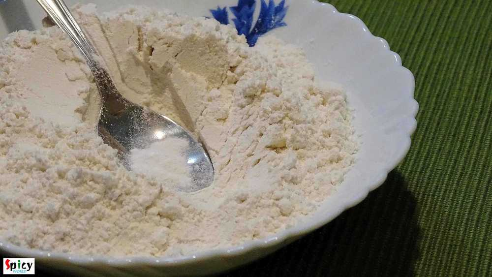
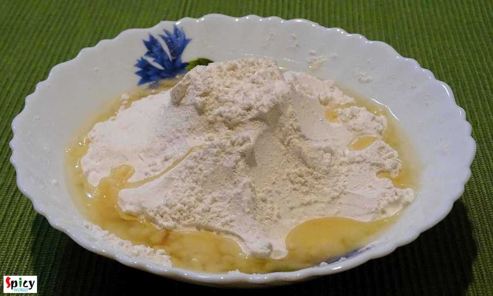
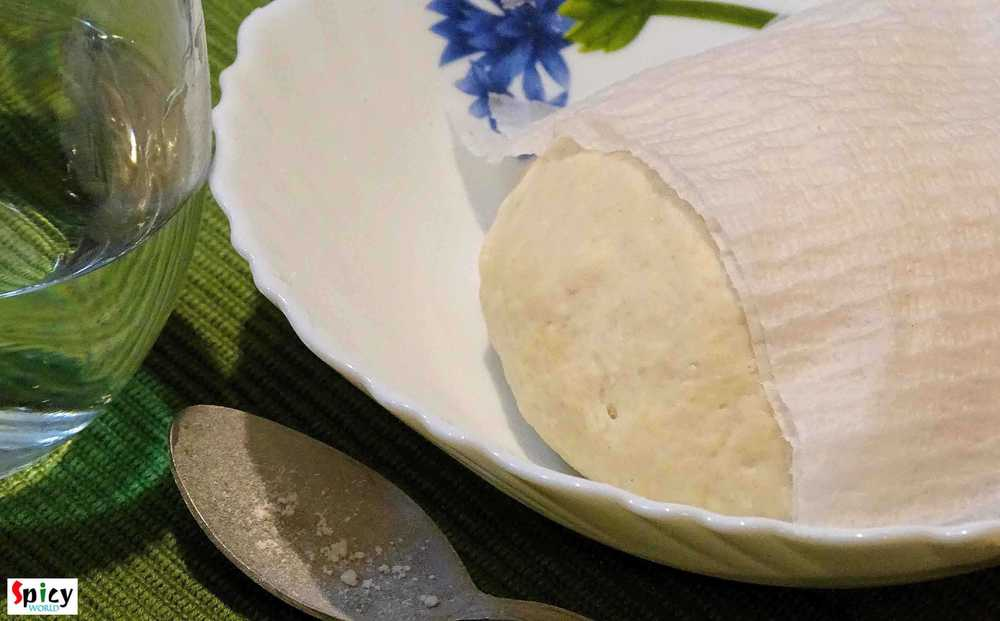
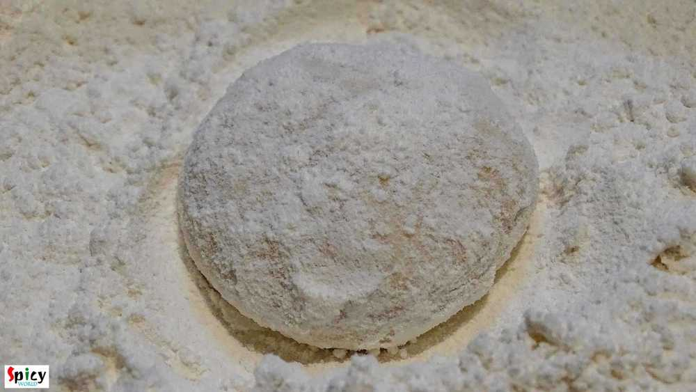
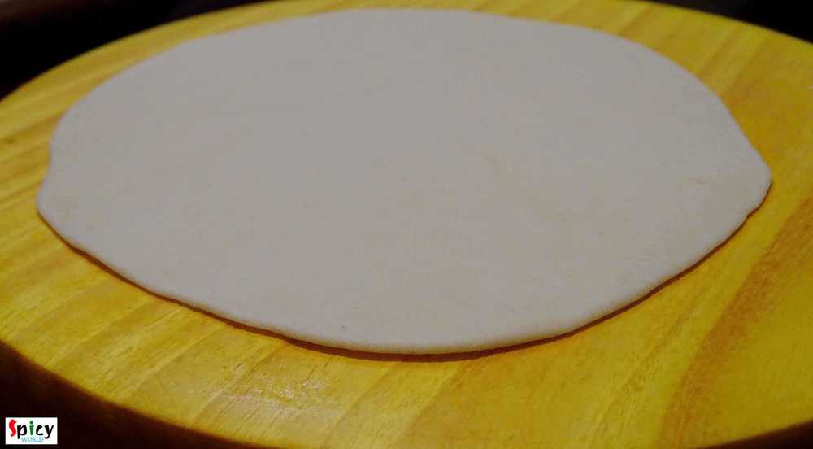
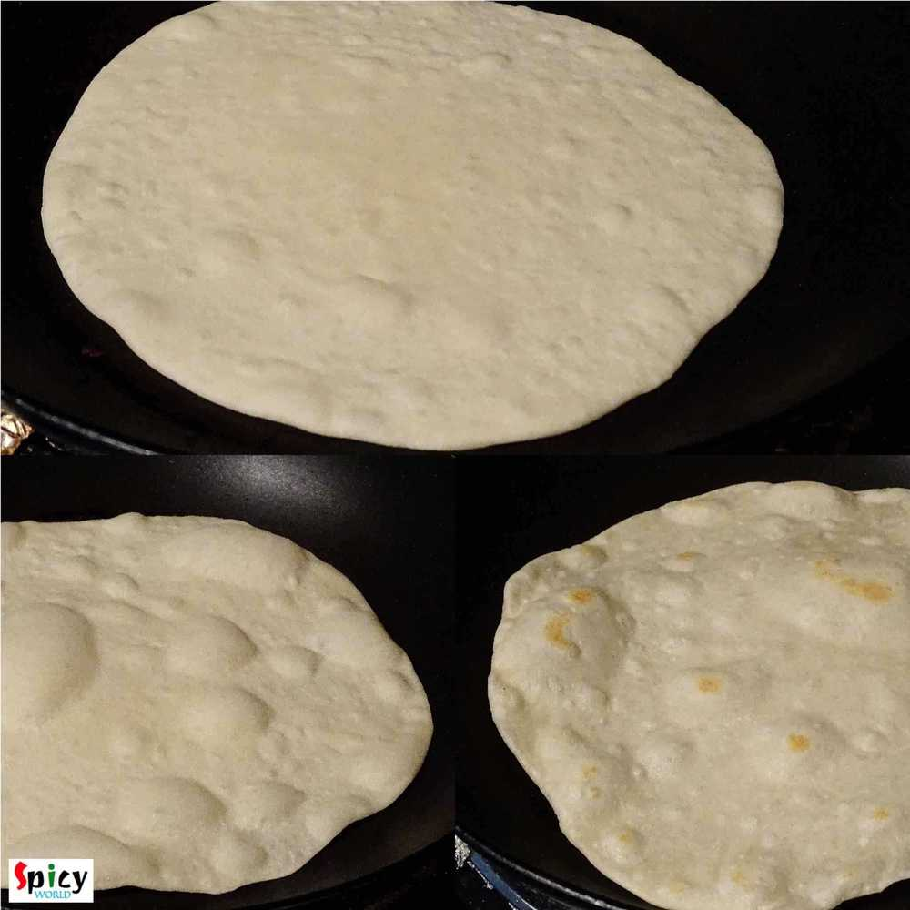

Simple and Easy Recipes
Tortilla
© 2016 Spicy World, Published on: Dec 16, 2015
After coming to Texas I was familiar with the name of 'tortilla'. Here maxican food is very famous. 'Tortilla' plays a big role in mexican cuisin. They make various dishes with this tortilla and many of them tastes really delicious. With tortilla you can make 'taco', 'burrito', 'quesedilla', 'enchilada' etc. I really love each of them and that's why I want to make tortilla in my own kitchen. Usually they use vegetable lard for the dough, as I didn't have that in my home, I used lots of vegetable oil. You can use olive oil also. So, here is how I made my tortillas ...

Ingredients
- 1 cup of all purpose flour / maida.
- half Teaspoon baking powder.
- half Teaspoon salt.
- 4 Tablespoons of vegetable oil.
- Warm water.

Steps
Put the flour, baking powder and salt in a mixing bowl.
Mix the dry ingredients first with your hand.
Then add the oil. Mix this with flour very well.
Gradually add warm water and make a soft dough.
Knead the dough for 6 minutes properly.
Then cover the dough with a damp tissue or cloth for 20 minutes.
Now make a lemon size ball out of the dough.
Roll the ball in dry flour once.
Flatten the ball to 2-3 inches with the help of a rolling pin.
Place it on a medium hot tawa. Keep it for 1-2 minute.
When you will see some bubbles flip it to the other side.
Again keep the other side for 1-2 minutes.
Remove it from the pan.
If you will use the tortillas later, then keep them in a air tight container or ziplock bag. No need to refrigarate.
Your warm, fresh tortillas are ready ...
Use them as taco shell, wrap etc.
")